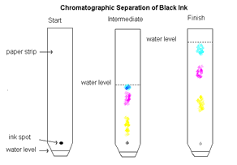
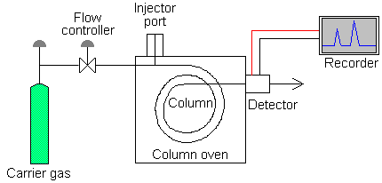

Introduction to Chromatography
Basic Theory
Chromatography is about molecules (organic molecules, usually small, but not atoms or metals!).
5% of all chemical research uses chromatography, 50% of industrial chemistry is chromatography
Definition: The separation of a mixture by passing it in solution or suspension or as a vapor through a medium om which the compoents move at different rates
what's missing? Detection! (and analysis, as separate mixtures are seen at different times
Paper chromatography - now mostly in undergrad chemistry lab
It was used to separate coloured chemicals or substances, especially pigments.
These days in stead of paper we use columns - it gives more volume for separation and mor control over the measurements
3 major parts: pumps and flow modulators, chromatography column itself, detection system
Gas chromatography

Liquid chromatography is a more complicated system - more pumps, fractiuons collectors
Selecting Instruments
Designing Methods